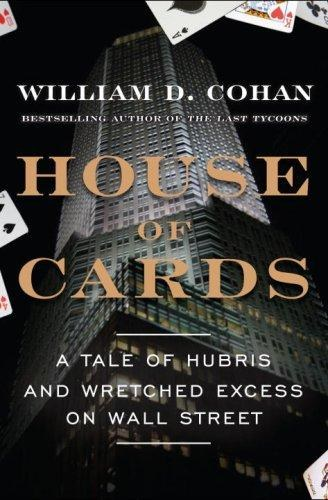

Library › Money & Finance
House of Cards: A Tale of Hubris and Wretched Excess on Wall Street — Summary & Key Lessons

Bear Stearns: eighty-five years of swagger, one weekend of margin calls. The definitive autopsy of the first dominion to fall in 2008.
📖 OPEN THE FULL INTERACTIVE BREAKDOWN →🌐 Read it in Hindi, Hinglish, Gujarati, Tamil & 22 more languages — free, with audio.
💡 The Big Idea
Bear Stearns built its personality in the 1920s as the scrappy outsider's firm (traders over bankers, hustle over pedigree) and kept that identity for 85 years, through the greenmail era, the rise of the mortgage machine, and the fateful late decision to double down on subprime securitization while rivals retreated. Cohan details the anatomy of the run: hedge-fund collapses (two Bear-managed subprime funds imploding in summer 2007) destroying counterparty trust, repo financing evaporating as lenders' risk desks demanded more haircuts, and the fatal weekend of March 2008 when JPMorgan (brokered by the Fed and Treasury) bought the carcass at $2 a share, later renegotiated to $10 with Fed backstops. The book's twin lessons: funding structure decides life expectancy in a panic (asset quality was almost secondary), and culture compounds (a firm that celebrated risk-taking for decades had nobody left with the standing to say stop).
🧠 The 8 Key Lessons
Lesson 1: Funding Structure Is Life Expectancy
The Repo Treadmill
Bear financed long-term illiquid assets (mortgage securities) with overnight and short-term repo, rolling tens of billions daily. In calm markets that was profitable efficiency; in a confidence crisis, every lender's daily decision became existential. Firms funded by demand liabilities (repo, deposits, redeemable capital) die at the speed of rumor. The lesson: match your liability duration to your asset liquidity, always, before the market does it for you.
📖 Example: In March 2008, counterparties who had lent to Bear for decades cut haircuts and tenors within hours, and the firm's $18 billion cash reserve (reported Thursday) was spoken for by Saturday. Read the full example →
⚡ Do this: Compute what fraction of your funding can vanish in 24 to 72 hours. If the number can kill you, extend durations now, while lenders still like you.
Lesson 2: Counterparty Trust Is the Real Currency
The Two Funds That Broke It
Summer 2007's collapse of two Bear-managed hedge funds (levered subprime CDOs) did more damage than any quarterly loss: it told every counterparty that Bear's own products could not be trusted, and that Bear had been the last to know. Trust in finance is operational, not reputational: it is whether your phone calls get answered. Once counterparties assume you are hiding losses, financing is over regardless of actual capital.
📖 Example: The funds' failure (investors locked out, assets auctioned at cents) became the market's live demonstration of subprime valuations, and Bear's name was on the demonstration. Read the full example →
⚡ Do this: Audit what a failed flagship product or fund would signal about your entire organization's credibility. Protect the trust carriers (your cleanest products) more than the profitable ones.
Lesson 3: Culture Compounds Too
The Swagger Inheritance
Bear's identity (traders first, burn your pedigree hustle, ride the hot hand) produced decades of outperformance and zero standing for caution. Risk managers were weak, dissenters were exiled (or laughed at), and the mortgage machine's growth was the only KPI. Culture is a compounding asset until it is a compounding liability, and the switch is invisible until the tail event.
📖 Example: The fixed-income division's dominance inside the firm meant risk complaints were career-limiting; by 2006 the firm's own stress complaints about subprime exposure were treated as personnel problems rather than signal. Read the full example →
⚡ Do this: Identify who in your organization is structurally punished for delivering bad news. If the answer is everyone, your culture has already chosen its tail-event posture.
Lesson 4: Concentration: The Machine You Love Becomes the Bet You Are
The Mortgage Machine
Bear was brilliant at securitization: top-tier issuance, servicing (EMC), trading, and the prop bets to match. Excellence bred concentration: by 2006-07 the firm's balance sheet and P&L were substantially a single macro bet (US housing prices, financing spreads). The lesson: your core competence, levered and concentrated, is indistinguishable from a directional bet. Size it like one.
📖 Example: The firm kept servicing rights and inventory from deals rivals would only broker, accumulating exposure that made its earnings look consistent right up until the market repriced the whole stack at once. Read the full example →
⚡ Do this: Model your organization as if your core competence were a single concentrated position. What move in the underlying (technology, regulation, rates) makes the position worthless? Hedge or diversify that now.
Lesson 5: The Weekend Is the Real Unit of Crisis Time
March 2008
The endgame compressed into days: denial on Monday, deflection midweek, the Fed-backed JPMorgan diligence on Saturday, a $2-a-share deal by Sunday (renegotiated to $10 within a week amid outrage and legal exposure). Modern finance dies in weekends because global money markets reset in hours. Crisis playbooks must be written for days, with diligence data rooms pre-built, valuation floors pre-decided and decision-makers reachable.
📖 Example: JPMorgan's teams flew in Friday and signed Sunday; Bear's board negotiated a price per share that had been the firm's hourly market cap days earlier, without ever controlling the diligence clock. Read the full example →
⚡ Do this: Build your distress data room now (clean financials, contract list, lender map, decision tree). The firm that can be diligenced in 48 hours gets a price; the one that cannot gets a seizure.
Lesson 6: Government Becomes Your Partner Whether You Like It or Not
The Fed in the Room
The rescue was a hybrid: private buyer (JPMorgan), public backstop (Fed's $29 billion Maiden Lane vehicle for toxic assets), Treasury pressure, and the precedent that investment banks could fail differently than deposit banks. The lesson for any systemically connected firm: in extremis, your negotiating counterparty is the state, and your outcome depends on what your failure would do to others, not what you deserve.
📖 Example: The $2 price (later $10) reflected JPMorgan's leverage in a rescue, including litigation protection and the Fed absorbing the worst assets; Bear's shareholders paid for the systemic risk their firm had created. Read the full example →
⚡ Do this: Know precisely which parts of your failure would hurt people who never dealt with you (suppliers' staff, municipal deposits, platform users). That list, not your ego, sets your rescue terms.
Lesson 7: Leadership Succession at the Top of a Leverage Cycle
Cayne, Schwartz, and the Boredom of Wealth
Bear's late-era leadership (Jimmy Cayne's bridge-and-golf absence, Alan Schwartz's 2008 ascension weeks before the fall) meant nobody at the top had both authority and urgency to change course. The structural lesson: leadership transitions compound risk when they coincide with cycle peaks, and boards must plan succession for the middle of cycles, not the ends.
📖 Example: Cayne's hospitalization and outside passions became symbols (rightly or not) of a distracted apex; the firm's crucial mortgage decisions were made by momentum rather than deliberation. Read the full example →
⚡ Do this: If your succession plan assumes calm years ahead, rewrite it for turbulence: name an emergency successor this quarter and give them a live project to practice on.
Lesson 8: Write the Obituary While Alive
Lessons for the Survivors
Cohan closes with the industry-wide echoes: Lehman six months later, the crisis's full shape, and the regulatory re-engineering that followed. The meta-lesson for any founder or executive: institutions that rehearse their own failure (pre-mortems, red teams, liquidity drills) survive longer than those that treat mortality as insult. Bear's 85-year swagger included a century of never needing a rehearsal; the first rehearsal was fatal.
📖 Example: Firms that ran 2007-08 with pre-committed deleveraging triggers and honest asset marks (the boring ones) passed through; the exciting ones appear throughout this genre of book. Read the full example →
⚡ Do this: Run one failure rehearsal this quarter: simulate your worst 72 hours (funding pulled, biggest customer gone, key regulator hostile) and execute the first day of the response for real, on paper and calendar.
✅ 5-Step Action Plan
- Extend liability durations until no 72-hour funding gap can kill you.
- Protect your trust carriers; never let a flagship failure signal about your cleanest products.
- Fix the incentive of whoever is punished for bad news; that person is your risk system.
- Size your core-competence concentration like the directional bet it is, and hedge the underlying.
- Pre-build your distress data room and run a live 72-hour failure rehearsal this quarter.
⚠️ When This Doesn't Work
Cohan had extensive cooperation from many insiders but the book centers personalities (Cayne especially) whose sides dispute the framing; blame for the collapse remains contested between leadership, the mortgage machine, and market structure. Numbers come from contemporaneous reporting and filings. Read it as the best narrative of the firm's 85 years and its weekend, and pair with the Fed's own Maiden Lane documentation for the rescue mechanics.
💀 The Graveyard Proves It
🏦 Bear Stearns — The 85-Year-Old Bank That Died in a Weekend. Burn: Sold for $2/share after trading at $170 — $30B of market value erased in days. Read the full case study →
💬 Best Quotes from House of Cards: A Tale of Hubris and Wretched Excess on Wall Street
- “In a panic, your balance sheet does not matter as much as your lender's opinion of your balance sheet at 3 a.m.”
- “The culture that made you can also unmaketh you: the swagger that won the eighties wrote the checks the century could not cash.”
- “Repo financing is a relationship measured in hours. Everything else in banking is measured in quarters.”
- “Nobody at Bear said stop, because saying stop had never once been how anyone got promoted there.”
Interactive version: mark lessons as read, listen in your language, share quote cards.